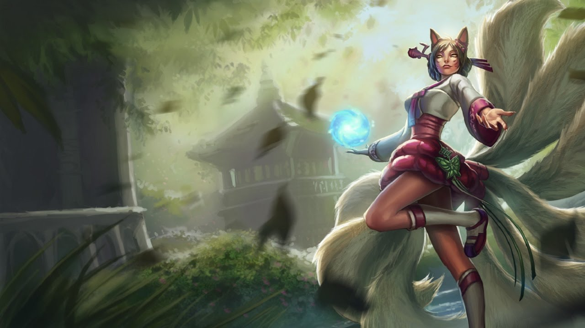
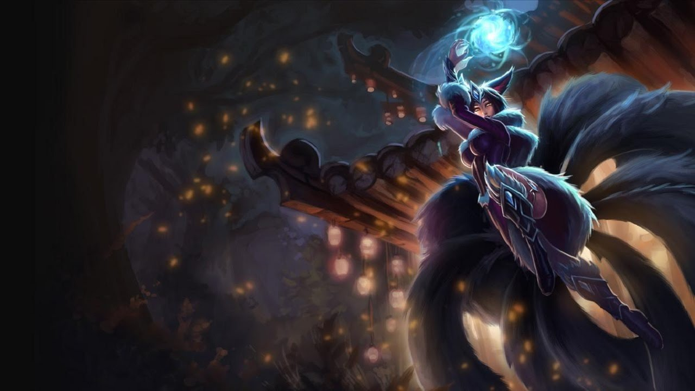
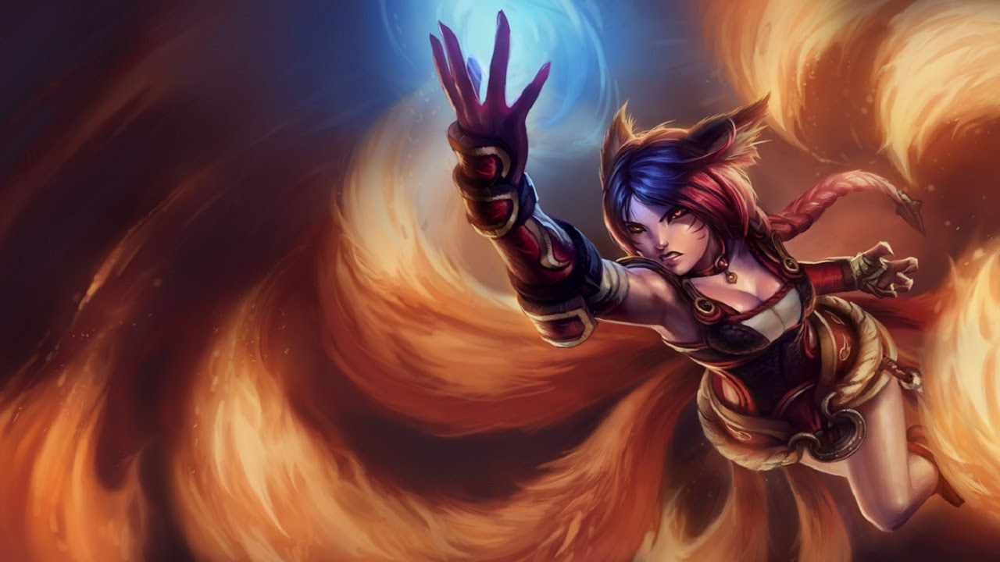
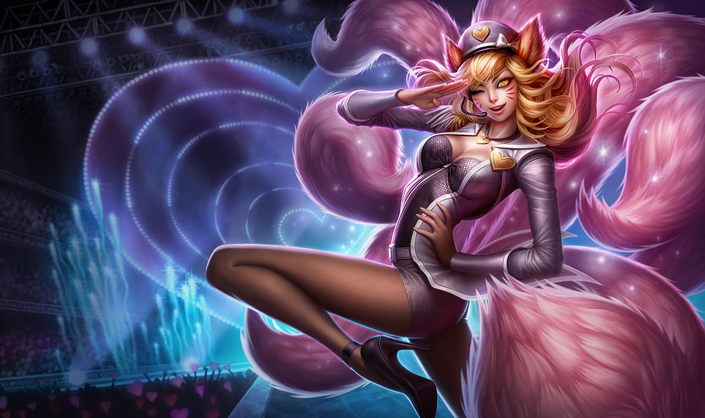
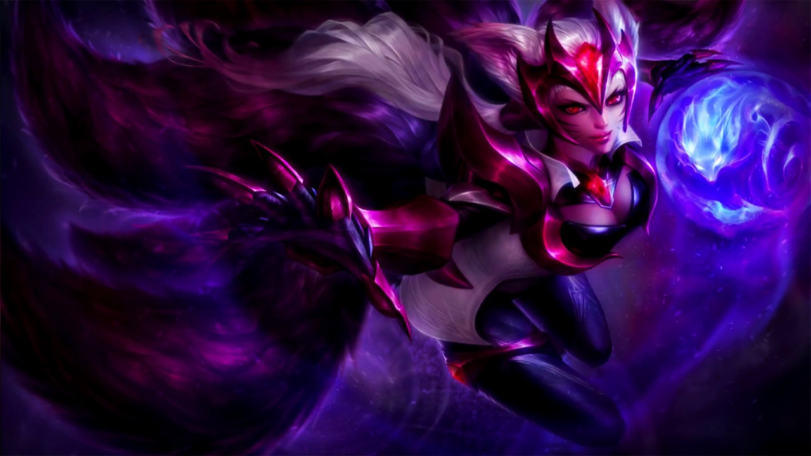
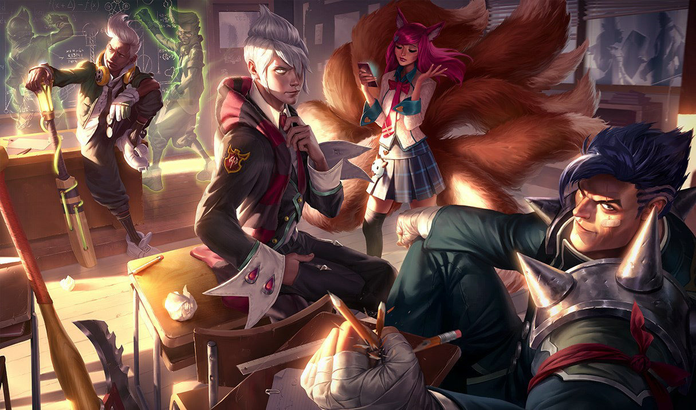
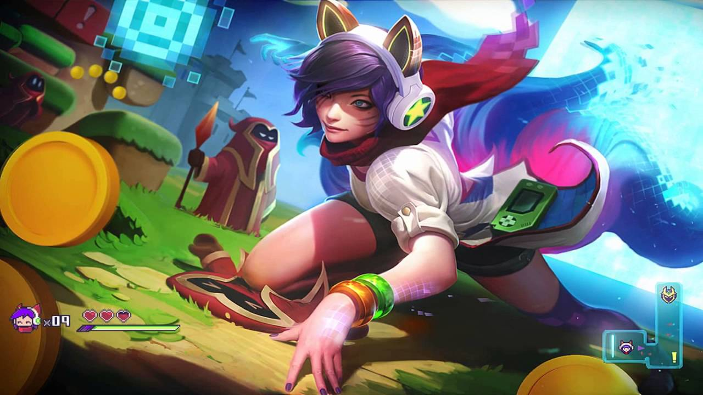
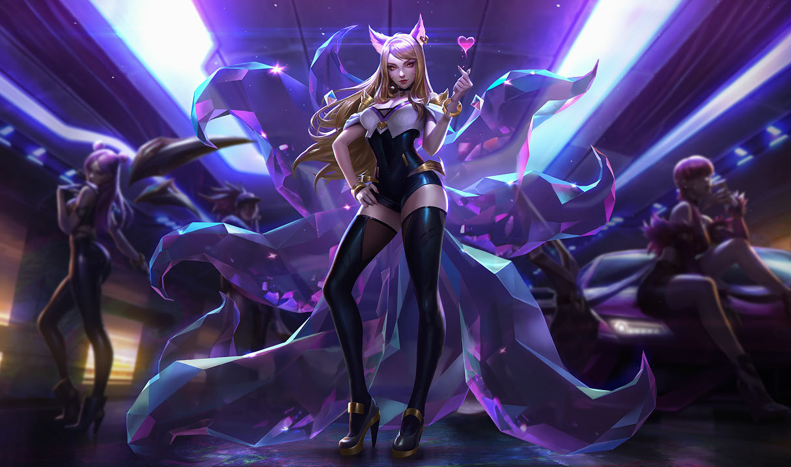
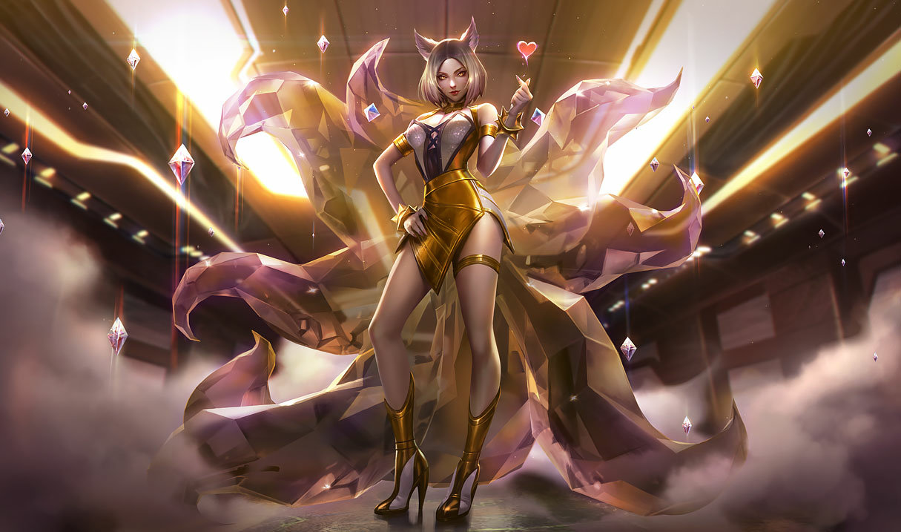

Képességei:
Passzív - Esszencialopás
Ha Ahri 9 ellenfelet eltalál a képességeivel, a következő képessége egyúttal gyógyítja is őt minden eltalált ellenfél után.
Q - A megtévesztés gömbje
Ahri kiküldi, majd visszahúzza magához a gömbjét, amely odafelé varázssebzést, visszafelé tényleges sebzést okoz.
W - Rókatűz
Ahri mozgási sebessége egy rövid időre megnő, és elindít három rókatüzet, amelyek célba veszik és megtámadják a közelben tartózkodó ellenfeleket.
E - Csábítás
Ahri egy csókot dob, amely megsebzi és elcsábítja az eltalált ellenfelet, és azonnal leállítja a mozgási képességeket, így az ellenfél ártalmatlanul Ahri felé kezd sétálni. A célpont ideiglenesen nagyobb sebzést szenved el tőle.
R - Lélekroham
Ahri előretör és energialövedékeket bocsát ki, amelyek megsebzik a közelben tartózkodó ellenségeket. A Lélekroham háromszor alkalmazható, mielőtt elkezdene újratöltődni.
Elérhető hőskinézetek:
Ahri

Dinasztikus Ahri
Éjúrnő Ahri
Rókatűz Ahri
Popsztár Ahri
Kihívó Ahri
Egyetemista Ahri
Játéktermi Ahri
Csillagőrző Ahri

K/DA Ahri
K/DA Ahri (tekintély kiadás)
Kerekerdő Ahri